Imprima
PDFs em A4, escala real. Configuração 100%, sem redimensionar nem adivinhar.
Sem juntar moldes soltos, adivinhar medidas ou descobrir sozinha como cada peça deve ficar. Você recebe a cena completa em A4, escala real, com o passo a passo para recortar, costurar à mão e montar.
Quero montar meu presépio por R$37Produto digital Acesso imediato Garantia de 7 dias Entrega no WhatsApp
O momento
Imagine ajeitar Maria e José ao lado da manjedoura, posicionar o anjo, os Reis e os animais, e olhar para a cena completa que antes existia só na foto. Feita à mão. No seu ritmo. No seu Natal. E poder dizer: eu que fiz.
Como funciona
PDFs em A4, escala real. Configuração 100%, sem redimensionar nem adivinhar.
As partes vêm nomeadas, com quantidade de corte e cor sugerida.
O manual mostra a ordem, a abertura, o enchimento e o fechamento. Máquina não é obrigatória.
Una as peças seguindo o guia até completar o presépio no mesmo estilo e escala.
O mecanismo
Um José de um site. Uma Maria de outro. Um tutorial no YouTube. Uma medida que ninguém explica. Quando coloca tudo junto, as peças nem parecem do mesmo presépio. Aqui a cena já foi pensada como uma cena.
A cena completa
São 15 projetos: Maria, José, Menino Jesus, anjo, pastor, três Reis Magos, quatro animais, manjedoura, estrela e estrebaria. Tudo no mesmo estilo para a mesa ficar completa e harmônica.
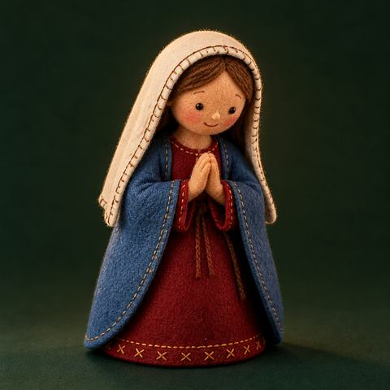
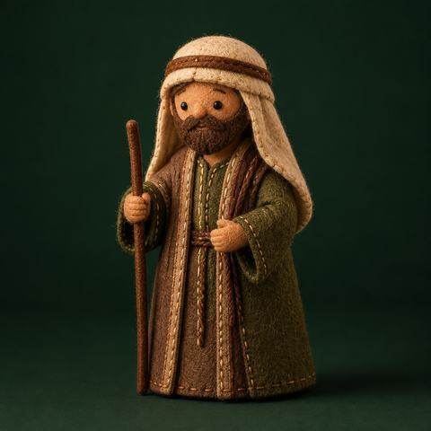
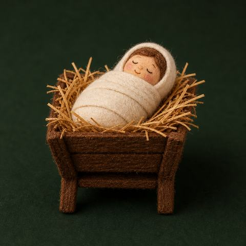
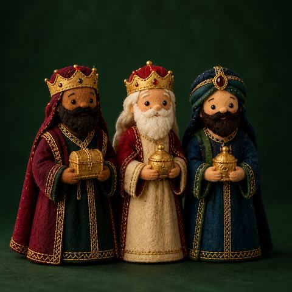
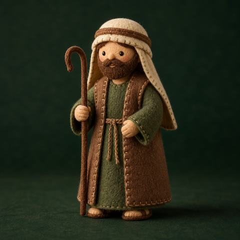
Veja antes de comprar
São 15 PDFs separados e numerados. Cada projeto tem 10 páginas e acompanha você do molde ao acabamento final.
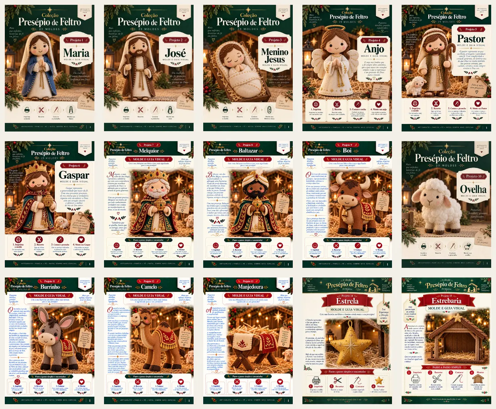
Por dentro de cada PDF
As imagens abaixo foram retiradas do projeto da Maria. Os outros projetos seguem a mesma organização visual.
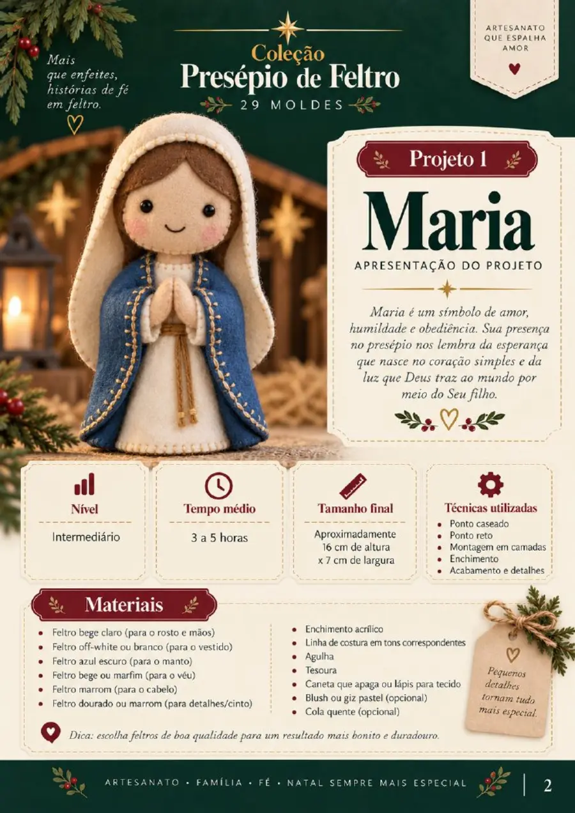
Você começa sabendo como a peça deve ficar, o nível do projeto, o tempo médio, o tamanho final e tudo o que será usado.
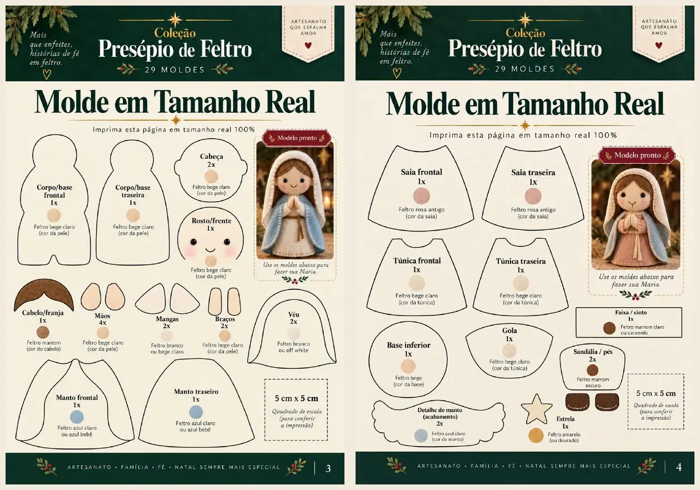
Partes identificadas, quantidade de corte, cor sugerida e quadrado de conferência para imprimir corretamente.
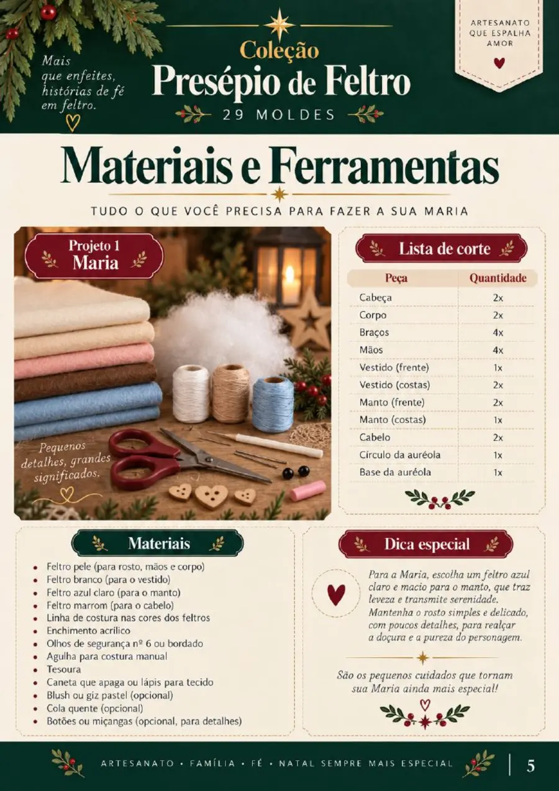
Uma lista direta para separar feltros, linhas, enchimento e acessórios antes de começar.
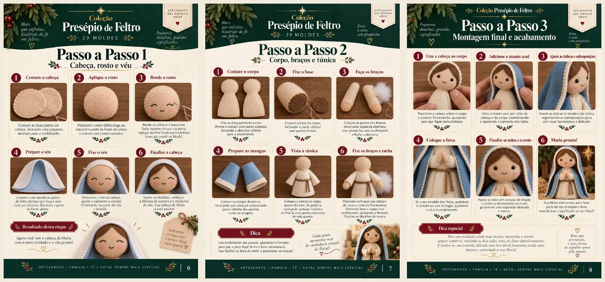
Fotos e instruções mostram a ordem para costurar, preencher, unir as partes e finalizar a peça.
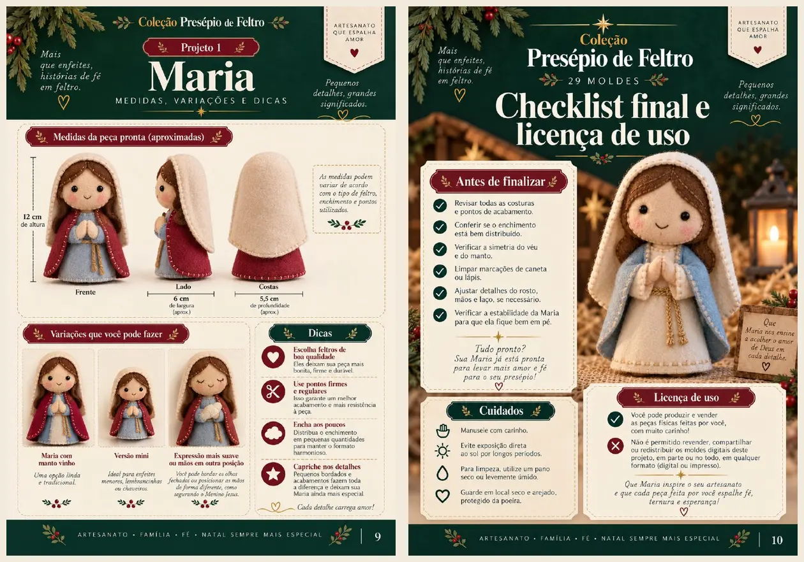
Referências do resultado pronto, possibilidades de variação e uma checagem final para não esquecer nenhum detalhe.
Você recebe os 15 arquivos organizados, abre no celular ou computador e imprime o projeto que quiser começar.
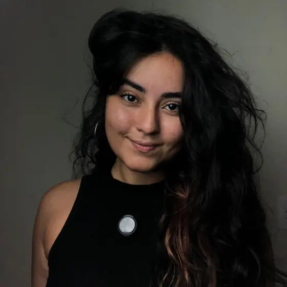
Atendimento humano
Lyzandra MagalhãesCriadora do Natal Feito à Mão
Se quiser confirmar como funciona o acesso, tirar uma dúvida sobre os arquivos ou entender melhor o que recebe, pode falar direto pelo WhatsApp antes de comprar.
Tirar uma dúvida no WhatsApp Atendimento pelo número +55 48 8471-6938Para quem é
Se a sua prioridade é a peça na mesa (harmônica, completa, no estilo da foto), este pacote foi feito para você.
Oferta Natal Feito à Mão
Tudo organizado pra você imprimir e montar a cena deste Natal.
O Natal se aproxima.Receba agora e faça uma peça por vez, sem deixar tudo para dezembro.
Garantia simples
Abra os moldes. Confira a organização. Veja o manual e a lista de materiais. Se perceber que não é o que esperava, você tem 7 dias após a compra para solicitar o reembolso, sem enrolação.
Dúvidas frequentes
Não. Você recebe PDFs para imprimir em casa ou em qualquer gráfica, em folhas A4.
Os moldes reproduzem o estilo e a proporção da cena. Cores de feltro, pontos, enchimento e acabamento manual podem gerar pequenas diferenças. O resultado é no mesmo espírito da foto, feito pelas suas mãos.
As medidas de cada personagem estão no guia. Os moldes já vêm em tamanho real para A4: basta imprimir em escala 100%, sem “ajustar à página”.
Sim, se você topa seguir um PDF passo a passo. O projeto é de costura à mão, com pontos simples. O manual cobre união, enchimento e acabamento. Máquina não é obrigatória.
Não. O pacote é 100% em PDF: moldes + guias. Ideal se você prefere imprimir e acompanhar no seu ritmo, sem depender de vídeo.
Não. Feltro, linhas, enchimento e acessórios você compra à parte. A lista pronta vem no guia de materiais, para evitar ida errada à loja.
Quanto antes começar, mais tranquila fica a montagem. Você pode fazer uma peça de cada vez, no seu ritmo, até completar a cena. Em setembro e outubro, dá pra ir sem pressa.
Sim. Depois da compra, você recebe os arquivos direto no WhatsApp, com acesso imediato. Os PDFs abrem no celular, tablet ou computador. Para costurar com conforto, muitos preferem imprimir em A4.
Reembolso em até 7 dias após a compra, se ao abrir os arquivos perceber que não é o que precisava.